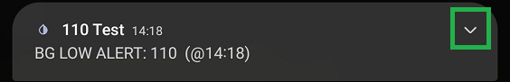
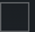

Alarms and Alerts

Settings
 Alarms and Alerts
Alarms and Alerts
Many alerts can be setup with xDrip+.
It is recommended to enable at least three alerts if xDrip+ is your only glucose monitoring app:
- Low alert
- High Alert
- Missed readings alert
Glucose Level Alerts List⌁
Glucose Level Alerts List
By default, one low and one high alert are defined.
Low alerts will trigger when BG is equal or below the alert value, high alerts when BG is equal or above.
To create a new alert, touch the CREATE LOW or HIGH ALERT title bar.
To modify an existing alert, long touch the alert
☰ Alert List
Low alert 70 All day
Override silent mode Default ringtone (Unknown ringtone)
High alert 224 All day
Override silent mode Default ringtone (Unknown ringtone)
- You can name an alert the name you want, as long as no other alert has the same name
- The threshold is the BG level that will trigger the alarm, only one alarm can use this value
- Default snooze is the delay that will be proposed when snoozing
- The alarm will trigger again every x minutes if not acknowledged
☰ Edit Alert
editing low alert
Alert Name: Low Alert 1
Threshold: 70 2
Default Snoze: 35 3
Re-raise every x minutes: 1 4
if unacknowledged
Alert Tone: Default ringtone (unknown ringtone) 5
5. You can customize the alert sound: touch CHOOSE FILE to select the default ringtone for this alarm.
-
System sound will allow you to choose from your phone ringtones.
-
Custom sound allows you to pick your sound/music.
-
xDrip default sound uses the app default.
What type of Alert?
System sound/Alarm
Custom Sound/Alarm
Default xDrip Sound
By default the alarm will be setup for the whole day.
Select time for Alert
✅ all day
If you unselect the checkbox you can customize activity hours.
Touch the start hour and end hour to define from what time to what time the alarm will be enabled.
Select time for Alert
☐ all day
0:00 - 0:00
You can disable the alarm (uncheck) when the phone is in silent mode (disabling is not recommended)
Override phone silent mode✅
Force speaker will make the alarm sound on the phone even when you're using other speakers (like Bluetooth)
Force Speaker✅
Vibrate enables phone vibration
Vibrate on alert✅
Disable alert completely disables it, it will show crossed in the Alert List
Disable alert☐
TEST ALERT will make this alert sound
SAVE ALERT will save this new or modified alert
REMOVE ALERT will delete this alert
SNOOZE ALERT BEFORE IT FIRES will allow you to avoid the alert to trigger, for example if you already treated an expected low or a high and know BG will move anyway you can avoid to hear the alarm for the time you want.
Glucose Alerts Settings⌁
Glucose Alerts Settings
Alert volume profile⌁
You can customize the volume of your alerts
Alert volume profile
High ○
Medium ○
Ascending volume ●
Vibrate only ○
Silent ○
Ascending volume is recommended if you don't want the alarm to blare immediately (useful during the night). You can also delay ascending volume to filter noisy readings and limit the maximum volume.
Audio Focus⌁
Audio Focus allows you to decide how to handle other sounds when an xDrip+ alarm or alert triggers.
Audio Focus
Choose what to do with other apps while playing alerts and adjusting system volume levels
You can automatically lower the volume, pause the other apps playing sounds (like media players) or pause all other sounds in order to better focus on xDrip+ sound.
Audio Focus
Don't adjust other app sounds ●
Lower volume of other apps ○
Pause other apps playing audio ○
Pause all other sounds ○
Smart snoozing⌁
Smart alerting⌁
Smart snoozing and alerting avoid the alert to trigger or re-raise if BG is going in the right direction (upwards for low alerts and downwards for highs). The threshold for acknowledging a sufficient change in the right direction are:
- Change is more than +4mg/dl in 5 minutes from low alert
- Change is more than -1mg/dl in 5 minutes from high alert
Smart snoozing 
Keep snoozing if glucose is heading in the right direction
Smart alerting
Don't alert if glucose is heading in the right direction
Don't alarm during phone calls⌁
Alarms will not sound if they trigger during a phone call.
Don't alarm during phone calls
Alarms silenced during telephone calls
Buttons silence alarms⌁
Button silence alarms is a quick way to snooze alarms by just pressing volume up or down.
Buttons silence alarms
Pressing the volume up or down button will snooze an active alarm when in the app
Alert buttons⌁
Alert button will add an action button in the drop down view of the alert.
Alert buttons
Show action buttons (like Snooze Alert) within alert notifications


Start snoozed⌁
Start snoozed applies the snooze delay before triggering the alarm. Make sure the Default snooze delay is appropriate in the alarm.
Start snoozed 
Alerts start out snoozed and must persist for a while to actually trigger
Wake Screen⌁
Wake up screen during alerts.
Wake Screen
Wake up screen during alerts. Might Unlock devices that don't have screen lock enabled
Use Camera Light⌁
Flash the back camera light during alerts (when the phone is in charge).
Use Camera Light
Flash camera light during alerts when connected to charger
Shortcut to BG Level Alerts⌁
You can add a shortcut entry to Level Alerts in xDrip+ main menu.
Shortcut to BG Level Alerts
Create a shortcut from main navigation to BG level screen
Suppress alerts if missed readings⌁
Suppress Alerts if missed readings
Level alerts remain active even if there is no signal (sensor change for example, or follower without network). This option allows you to suppress them. Make sure you have a missed alert enabled if you use this feature.
Suppress Alerts if missed readings
Suppress snoozed and active alerts after predefined period of missed readings
You can define the number of minutes after which you want alerts to stop.
Suppress snoozed and active alerts after .. minutes (minimum 10)
Suppress snoozed and active alerts after predefined period of missed readings
Notification Channels⌁
With Android 8 and above you can use the notification channels for your alerts. This will allow you to customize notifications at Android level.
Notification Channels
In order to setup this feature, go to Android Settings / Notifications / Apps / xDrip+ and allow sound and vibration.
You'll then be able to decide each notification behaviour. If you have multiple notification and alarms, disable the unwanted ones here.

Ascending Volume settings⌁
Ascending Volume settings
Delay Ascending Volume⌁
You can delay the start of the ascending volume alert without delaying vibration that will start as soon as the alert is triggered.
Delay Ascending Volume
For ascending volume profile, delay the start of the alert sound by 3 minutes. The vibration (if enabled) starts as soon as the alert triggers regardless of this setting
Ascend to medium⌁
You can limit the maximum volume of the ascending volume alerts and alarms to medium instead of maximum.
Ascend to medium
When enabled, ascending volume profile will ascend to medium volume instead of maximum
Calibration Alerts⌁
If your sensor requires periodic calibration you can setup xDrip+ to alert you when calibration is due.
You can setup the period between calibrations, sound to be played, etc ...
Calibration Alerts
Calibration Alerts
Alert when a calibration is requested
Hours between calibrations
How many hours between calibration requests
Calibration request sound
Default
Override Silent mode
Even when charging
Uncheck to not ask calibrations when phone is charging
Repeat Alerts
Keep alerting if no calibration is performed
Alert Repeat minutes
20
Initial alert⌁
Initial calibration alert is used when starting a sensor requiring initial calibration: it will trigger when enough good readings are available to calibrate.
Initial Alert
Play sound when Initial Calibration is requested
Missed Reading Alert⌁
Missed Reading Alert
When relying on xDrip+ to alert you for lows and highs, it is essential to make sure that it is actually receiving BG readings. For this, if you don't have any other alarms, enable this feature for your safety.
Setup is similar to glucose level alerts. The alarm sound has to be defined in Other Alerts (See below). In order to test it, put your phone in airplane mode until it triggers.
☰ Configure Missed Readings
✅ Enable missed reading alert
Alert if no data is received in:
30 minutes
Select time for alert:
✅ All day
Wait before raising the same alert after snooze:
20 minutes
☐ Reraise alerts before snooze time
Alert Reraise time:
60 seconds
Other Alerts⌁
Other Alerts
Noisy Readings⌁
NOISY READINGS
If you enable this feature and your sensor supports it, you can setup an alert for noisy readings.
Bad (noisy) Value Alerts
Alert after x minutes of noisy values
90
Alert snooze
Number of minutes before raising the same alert after snooze
Reraise alerts before snooze time
Reraise the alert if not snoozed sooner
Alert reraise time
Number of SECONDS to pass before raising the same alert
Falling or rising BG⌁
FALLING/RISING BG
You can also setup alerts for fast BG changes and define the 1 minute change triggering value. For example 3 minutes means 15 mg/dl (0.85 mmol/l) every 5 minutes.
BG falling fast
falling rate threshold
3mg/dl/min (0.17mmol/l/min)
BG rising fast
rising rate threshold
3mg/dl/min (0.17mmol/l/min)
Alert preferences⌁
ALERT PREFERENCES (FOR THESE ALERTS)
The alerts above and also Missed Readings use the sound defined below.
Some recent Android versions do not ring it unless you use Notification channels.
Make sure to test the alarm
This is an important feature to sleep safely. Reduce the missed readings period and put your phone in airplane mode (no Wi-Fi) to force the alarm to ring.
Alert sound
Default
Override Silent mode on these alerts
Extra Alerts⌁
Extra Alerts (xDrip+)
Persistent High Alert⌁
Persistent High Alert
Instead of a high alert that will trigger as soon as BG reaches the trigger value, you can setup a persistent high alert that will only trigger when BG remains above a setup value for more than a certain time. You can use either xDrip+ High Value or a value you decide for triggering this alert.
Enable
Notify if above threshold for longer than the time specified below
Threshold: High Value
When enabled, High value is the threshold.
When disabled, the threshold is the value defined below.
Threshold
170 mg/dl
for longer than (minutes)
60
Repeating max every (minutes)
20
Alert Sound
Chose the sound used for the alarm
Forecasted Low Alert⌁
Forecasted Low Alert
You can set an alarm on forecasted low value. This feature will use the momentum (extrapolation of the current BG trend) and not the prediction settings. Forecasted low (min) is the time in which a low will be forecasted (the one that usually displays in yellow on the graph screen).
Forecast Lows will display a message on xDrip+ screen. In order to have an alarm sounds when a low is forecast, enable Raise alarm on Forecast Low.
Forecasted Lows
Extrapolate data to try to predict lows
Raise alarm on Forecast Low
Notify when predicted low time reaches threshold
Alarm at Forecast Low min
40
Predicted Low Sound
Choose the sound used for the alarm
In the example below if you set Alarm at forecasted low (min) to 50 minutes, il will trigger. The red dotted line is the forecasted BG trend, extrapolated from the previous measurements.

Other xDrip+ alerts⌁
Other xDrip+ Alerts
Some extra alerts are available.
Battery alerts are available if your bridge sends this information to xDrip+ (historically G4 now Libre bridges).
Collector battery alerts
Notify when battery level goes below
Low battery percentage
30
Parakeet related alerts
Notify when Parakeet device stops checking in
Silent alert when charging
Raise Parakeet notification silently when charging
Follower Chime New⌁
After missed readings, a notification will sound when new data is received after more than 20 minutes.
Follower Chime New
Notify when data arrives from the master if the interval is > 20 mins.
Snooze Alert⌁
Snooze Alert
If there is no active alert, you can pre-snooze alerts from this menu so that they won't trigger for a certain time.
 Snooze
Snooze
You will be proposed a default snooze period. Scroll up and down to change it.
Default Snooze
50 minutes
60 minutes
70 minutes
If an alert triggers you will see the notification in your phone drop down panel, and eventually hear the sound.
You can snooze the alert swiping the notification, you can customize it further tapping it.

You can access the snooze menu by touching the notification or from xDrip+ main menu, snooze alert.
At this point, the snooze menu will also display the active alert.
Touching snooze will snooze it for the period selected.
Snooze
Snooze
20 minutes
30 minutes
40 minutes
Active alert exists named "Night" alert will rerise at 1:25:01 (0 minutes left)
ALL ALERTS CURRENTLY DISABLED⌁
If you pre-snooze (disable) all alerts, you will see this warning message.

To remove it you need to re-enable alerts.
Snooze
Visible alert notification⌁
Available for Android 8 and above.
When an alert triggers you will see it in the notifications drop down panel.

Swiping it will snooze it, touching it will open a preferences menu.
Deliver quietly will remove notifications channel sound and vibration.

You can restore it with allow sound and vibration with the notifications channels.

Settings will drive you to your phone notifications setup settings.
You can also completely turn off notifications channels for xDrip+.